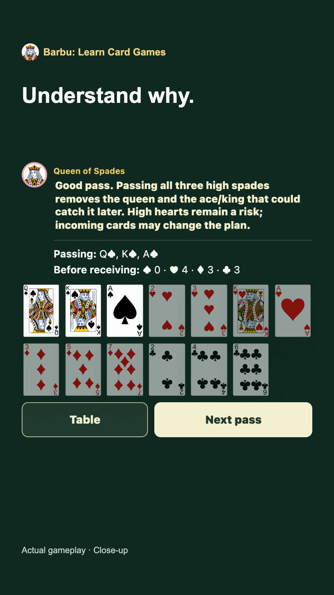

Make a small decision.
Short explanations and interactive exercises introduce the game one idea at a time. You choose cards instead of just reading rules.
BARBU · LEARN CARD GAMES
Feel ready for your next card table. Learn the rules by making decisions, see why a play works, and practise at your own pace.
Barbu is a mobile card-game learning app for beginners and returning players. Start with Hearts or Gin Rummy, then explore more games.
Practice is against computer opponents. Bring what you learn to games with friends, family or a local club.

FROM YOUR FIRST CHOICE TO A FULL HAND
Short explanations and interactive exercises introduce the game one idea at a time. You choose cards instead of just reading rules.
Feedback explains the decision: what helped, what was risky and which rule mattered. Guided hands connect the ideas.
Play local hands against computer opponents. Return to the learning material when you need a reminder, then take your confidence to a real table.
A LOOK INSIDE BARBU
See a Hearts decision, the feedback that follows and the wider game collection in this short app preview.
Watch on YouTube ↗Learn and Play share the same game rules. Local tables may use different conventions.
A TABLE WORTH EXPLORING
Hearts · Gin Rummy · Barbu · Whist · Spades · Bridge · Card Counting I
The collection includes lessons and local practice. Barbu uses a fixed-order training format; Bridge is a learning option, not a replacement for a specialist teacher.
FOR CLUBS, TEACHERS & COMMUNITY ORGANISERS
Give people a way to practise before the next meeting. If you introduce card games at a club, library, community group or family table, we’d like you to try Barbu and tell us whether its lessons fit the way you teach.
We’re looking for feedback and distribution partners. This is an invitation to assess and recommend the app—not a club-management platform, booking service or online multiplayer room.
Talk to Martin about BarbuBeginners, returning players and anyone who wants to learn another card game before joining people at a table. You do not need club membership.
No. Practice and Play use computer opponents. “Play together” means taking what you learn into in-person games.
Barbu is available for Android on Google Play. For iPhone availability or help getting started, contact Martin.
The current experience is free and without ads. Future content and pricing may change. There is no club subscription offer on this page.